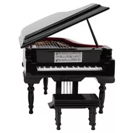
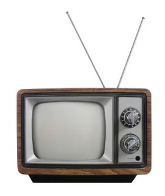
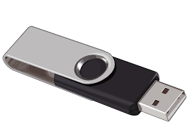
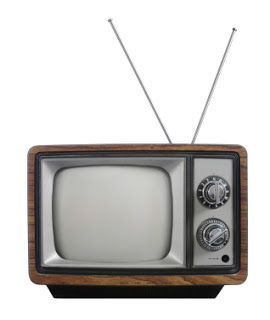
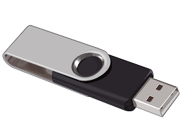

LINHA DO TEMPO - INVENÇÕES
O piano, que também chamado de pianoforte ou fortepiano, foi inventado na Itália por Bartolomeu Cristofori.
A bicicleta do barão alemão Karl von Drais é considerada a pioneira, portanto, ele a batizou de “máquina corredora”.
O estadunidense Ives McGaffey construiu o primeiro aspirador de pó de madeira e lona com sistema manual.



1698 - O piano
1817 - A bicicleta
1869 - O aspirador de pó
1879 - A lâmpada
1926 - A televisão
2000 - O pendrive
 



Thomas Edison criou a lâmpada incandescente, seu primeiro invento comercialmente viável.
Philo Farnsworth é considerado o inventor da televisão, já que criou o primeiro protótipo dela enquanto ainda estava no ensino médio.
Pendrive ou Memória USB Flash Drive foi criado pelo engenheiro elétrico israelense Dov Moran.